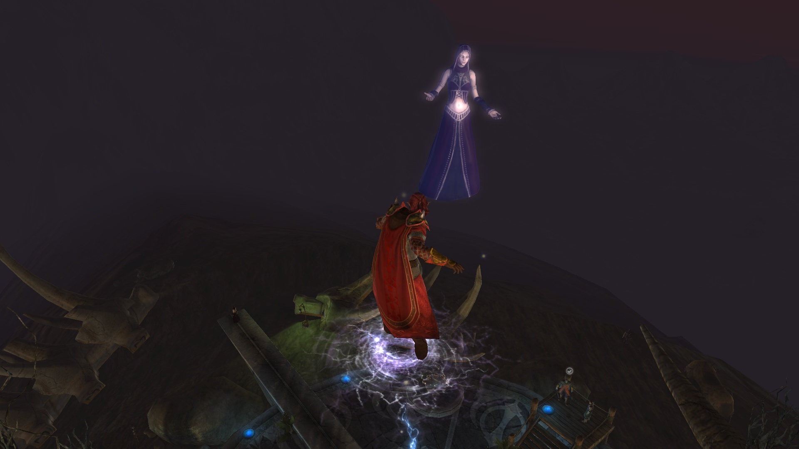
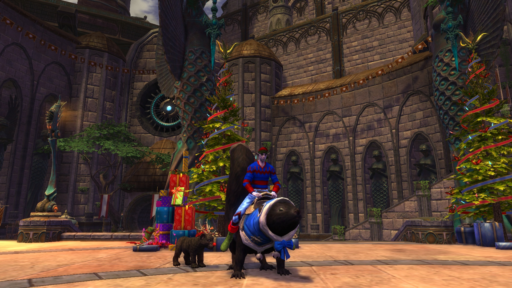
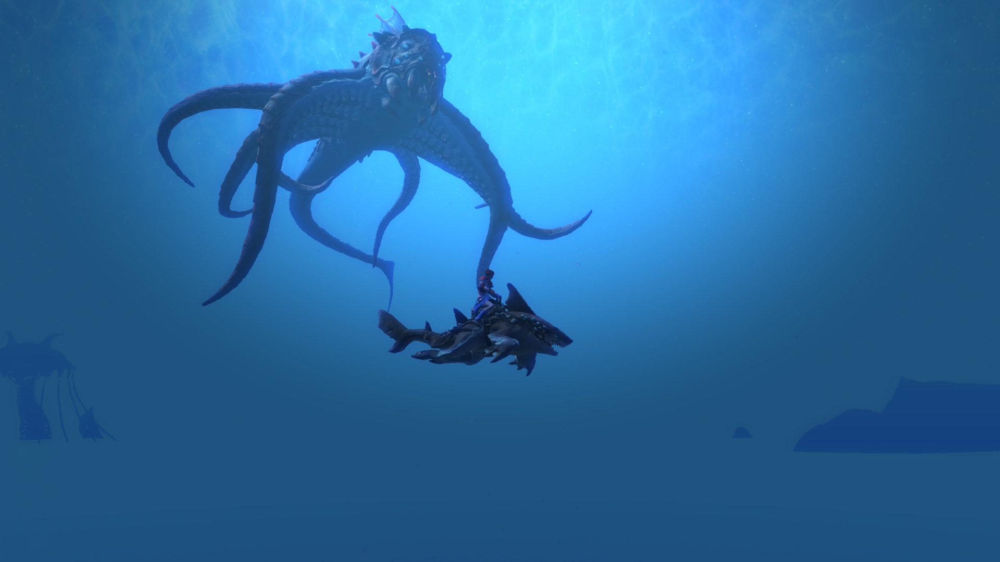

You've undoubtedly come here seeking to learn about our world and the exploits of our most famous heroes. Before you embark upon this, our humble museum, it would be fitting for me to explain a bit about our world. In particular, having myself traveled through the multiverse of slivers, there are some common themes that may strike cisitors as odd.
|  |  |  |
|---|---|---|
| Who are we? | What have we done? | How can you be a Hero? |
| Find profiles of all our members as well as the profiles of close allies. | A record of all the Ortaina Anar's adventures in saveing Telara and beyond. | Interested in joining your own slive of Telara ti fught the cosmic terrors? Here are some resources to help you become the best ascended you can be! |
| Roster | Stories | Resources |